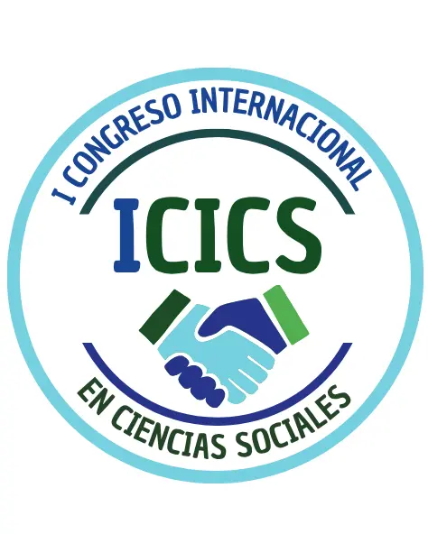

I Congreso Internacional en Ciencias Sociales
El Departamento de Ciencias Sociales de la Universidad de Córdoba invita al I Congreso Internacional de Ciencias Sociales que se realizará del 1 al 19 de septiembre 2025.

Descripción del Evento
Este evento está dirigido a investigadores, profesionales, estudiantes y egresados interesados en presentar ponencias y pósteres relacionados con investigaciones terminadas, formuladas o en curso, experiencias significativas dentro de las áreas temáticas propuestas. El congreso tiene como propósito consolidarse como un espacio para el diálogo, la reflexión crítica y la construcción colectiva de conocimiento en los campos de las ciencias sociales y humanidades.
Modalidades de Participación Ponencias:
Trabajos de investigación culminados o en desarrollo que presenten
hallazgos relevantes y aporten perspectivas innovadoras.
Modalidades de Participación Pósteres:
Investigaciones formuladas o en curso que propongan
nuevas ideas,
enfoques metodológicos o experiencias en implementación.
Tallerista

Dr. Luis Quintero, PhD
Desafíos de las Competencias Digitales Docentes en Ciencias Sociales: Miradas
Interdisciplinares para la Educación y la Sostenibilidad
Líneas Temáticas
Invitamos a la comunidad académica y profesional a presentar sus trabajos en las siguientes áreas.
Modalidad de las Ponencias
Para ofrecer flexibilidad y facilitar la participación de la comunidad global, I Congreso Internacional en
Ciencias Sociales aceptará ponencias en dos modalidades
Presencial
Universidad de Córdoba - Montería
Virtual
Conéctate a través de RENATA
Sede
Para más detalles, por favor, esté atento a los comunicados oficiales del Departamento de Ciencias Sociales y la
I Convención Internacional de Ciencias de la Educación y Humanas (CIEH
2025).
Direccion
Carrera 6 No. 77- 305 Montería - Córdoba, Colombia
Correo Electrónico
cieh@correo.unicordoba.edu.co
Dr. Luis Quintero, PhD
Desafíos de las Competencias Digitales Docentes en Ciencias Sociales: Miradas Interdisciplinares para la Educación y la Sostenibilidad
Líneas Temáticas
Invitamos a la comunidad académica y profesional a presentar sus trabajos en las siguientes áreas.


Modalidad de las Ponencias
Para ofrecer flexibilidad y facilitar la participación de la comunidad global, I Congreso Internacional en Ciencias Sociales aceptará ponencias en dos modalidades
Presencial
Universidad de Córdoba - Montería
Virtual
Conéctate a través de RENATA
Sede
Para más detalles, por favor, esté atento a los comunicados oficiales del Departamento de Ciencias Sociales y la I Convención Internacional de Ciencias de la Educación y Humanas (CIEH 2025).
Direccion
Carrera 6 No. 77- 305 Montería - Córdoba, Colombia
Correo Electrónico
cieh@correo.unicordoba.edu.co